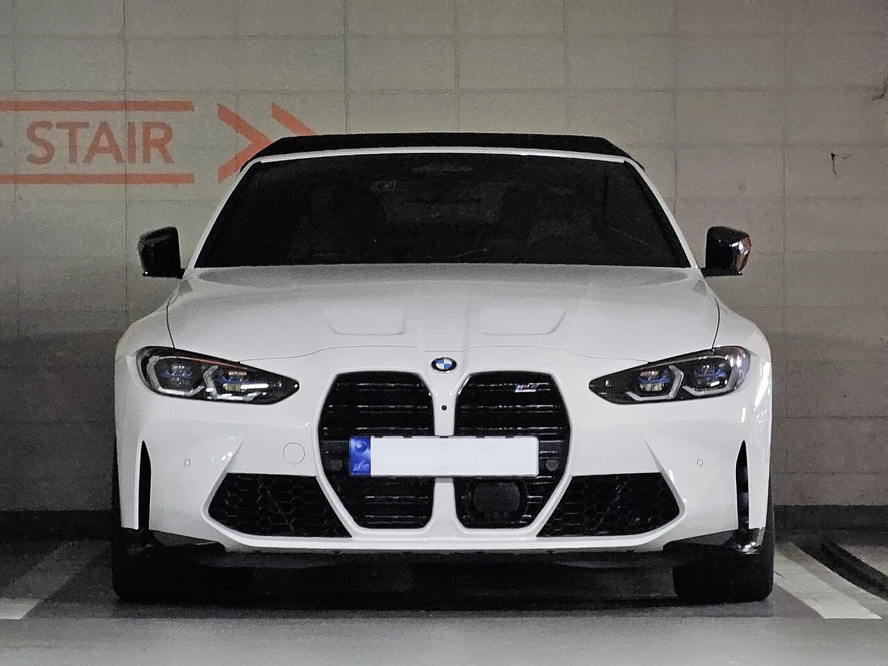
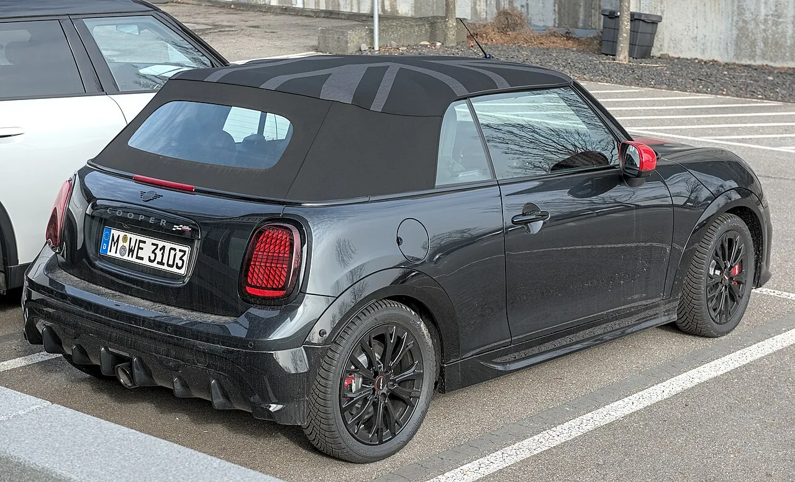
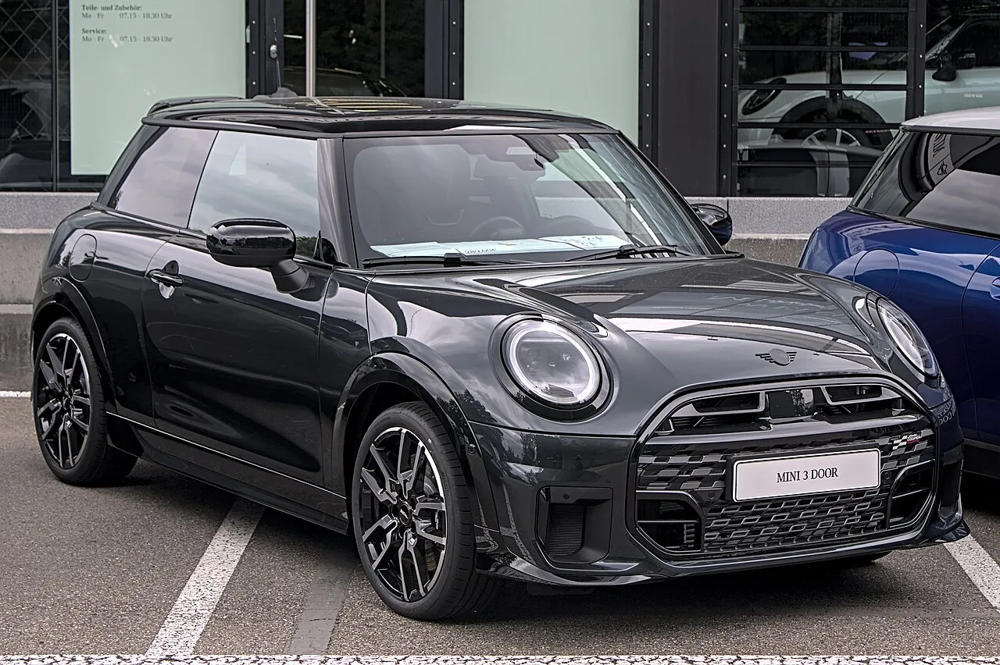

▲ BMW가 탈착식 컨버터블 헤드라이너 특허를 출원했다 ⓒ Wikimedia Commons (CC BY-SA 4.0)
소프트톱 컨버터블에는 오래된 약점이 하나 있습니다.
지붕을 닫고 안에서 올려다보면, 뼈대가 그대로 보인다는 것입니다.
BMW가 8월 23일 공개된 특허에서 내놓은 답은 의외로 단순합니다. 원단 한 겹을 벨크로로 붙이는 방식입니다.
1. 소프트톱의 오래된 문제
하드톱 컨버터블과 달리 소프트톱은 접히는 구조입니다. 그래서 지붕을 지탱하는 프레임과 링크가 안쪽에 노출되기 쉽습니다.
고정형 헤드라이너를 붙이면 되지 않느냐고 물을 수 있습니다. 문제는 접힐 때입니다. 천이 함께 접히면서 주름이 잡히거나 뭉치게 됩니다.
📍 BMW의 해법
천을 신축성 있는 별도 부품으로 만들고, 지붕이 닫힐 때 함께 늘어나도록 설계하는 것입니다. 억지로 접히는 대신 당겨지면서 펴집니다. 주름이 생길 자리를 없애는 접근입니다.
2. 왜 벨크로인가
고급차 특허에 벨크로가 등장한다는 것이 의외로 보일 수 있습니다.
그런데 이 선택이 특허의 핵심입니다. 접착이나 용접으로 붙이면 한 번 장착하면 끝입니다. 벨크로·지퍼·클립이면 떼었다 붙일 수 있습니다.
| 항목 | 내용 |
|---|---|
| 장착 주체 | 공장 · 딜러 · 소유자 직접 |
| 교체 | 계절·취향에 따라 변경 |
| 소재·색상 | 공장 기본 옵션을 넘어선 선택 폭 |
| 기능 | 방음 성능 개선 여지 |
| 프리미엄 사양 | 파이버 옵틱 스타라이트 헤드라이너 |
마지막 줄이 CarBuzz가 제목에 롤스로이스를 넣은 이유입니다. 천장에 별을 박은 스타라이트 헤드라이너는 롤스로이스의 상징적인 사양입니다.

▲ 특허 문서에는 4시리즈와 M4 컨버터블이 언급됐다 ⓒ Wikimedia Commons (CC BY-SA 4.0)
3. 애프터마켓이라는 시장
이 특허가 열어놓는 시장이 하나 더 있습니다.
소유자가 직접 교체할 수 있다는 것은, 딜러에서 파는 정품 액세서리가 될 수 있다는 뜻입니다. 차를 판 뒤에도 추가 매출이 생기는 구조입니다.
📍 완성차 업체가 애프터마켓을 노리는 이유
신차 판매는 한 번이지만 액세서리는 반복됩니다. 특히 컨버터블처럼 감성 소비 비중이 큰 차종은 소유자가 꾸미는 데 지출할 의향이 높습니다. BMW가 M 퍼포먼스 파츠 라인업을 키워온 것도 같은 맥락입니다.
4. 어떤 차에 붙을 수 있나
| 브랜드 | 모델 |
|---|---|
| BMW | 4시리즈 · M4 컨버터블 |
| 미니 | 쿠퍼 컨버터블 |
| 롤스로이스 | 향후 적용 가능성 |
세 브랜드 모두 BMW 그룹 소속입니다. 하나의 기술을 그룹 전체에 걸쳐 쓰는 것이 개발비 회수에 유리합니다.
미니 쿠퍼 컨버터블이 포함된 점이 흥미롭습니다. 미니는 개성 있는 꾸미기 수요가 특히 강한 브랜드입니다. 색상과 패턴을 바꿀 수 있는 헤드라이너는 이 브랜드와 잘 맞습니다.

▲ 미니 쿠퍼 컨버터블도 적용 대상으로 언급됐다 ⓒ MINI
5. 다만 특허는 특허입니다
✅ 확인해야 할 것
· 양산 적용은 확정되지 않았습니다 — 원문도 이를 명시했습니다
· 지식재산 보호 목적의 출원인 경우도 많습니다
· 가격·출시 시기 언급 없음
· 공개일은 2026년 8월 23일, 문서번호는 WO2026171304입니다
그럼에도 이 특허가 눈에 띄는 이유가 있습니다. 복잡한 기술이 아니기 때문입니다. 신소재도, 새 전자 장비도 필요 없습니다. 원단과 체결구뿐입니다.

▲ 개성 있는 꾸미기 수요가 큰 브랜드일수록 이런 옵션의 값어치가 커진다 ⓒ MINI
6. 정리
BMW가 벨크로·지퍼·클립으로 탈착하는 컨버터블 헤드라이너 특허를 출원했습니다. 신축성 원단이 지붕이 닫힐 때 함께 늘어나 주름을 막는 구조입니다.
공장뿐 아니라 딜러나 소유자가 직접 교체할 수 있다는 점이 핵심입니다. 계절이나 취향에 따라 바꿀 수 있고, 스타라이트 헤드라이너 같은 사양도 가능해집니다.
4시리즈, M4 컨버터블, 미니 쿠퍼 컨버터블이 언급됐고 롤스로이스 적용 가능성도 거론됩니다. 문서번호는 WO2026171304, 공개일은 8월 23일입니다. 다만 양산 적용은 확정되지 않았습니다.